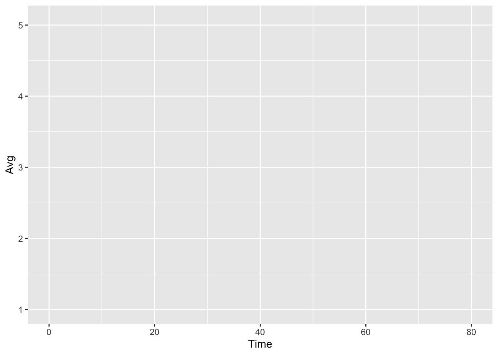
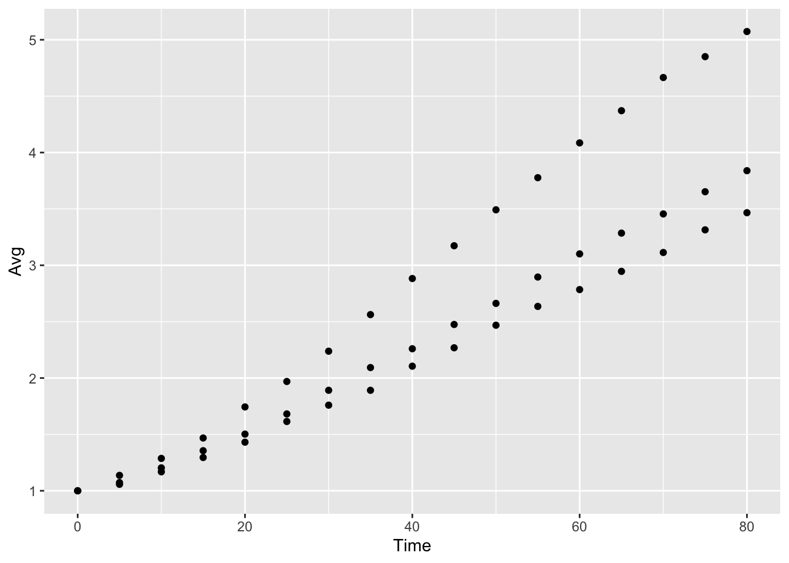
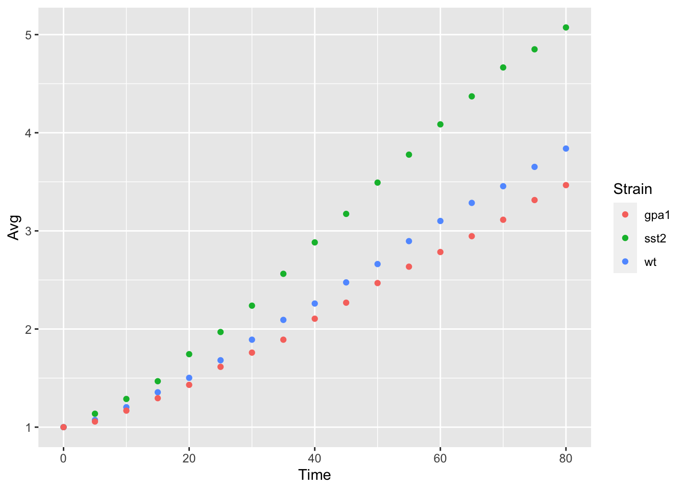
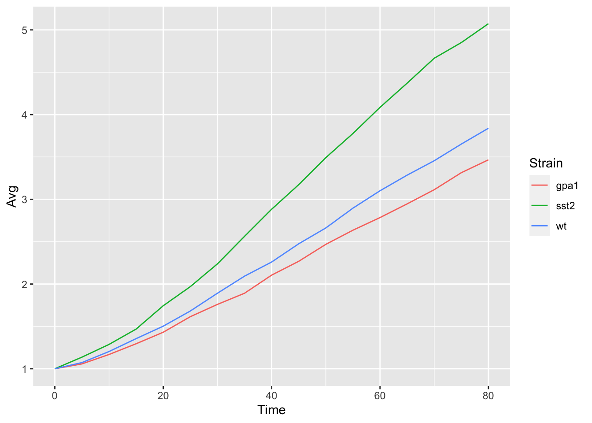
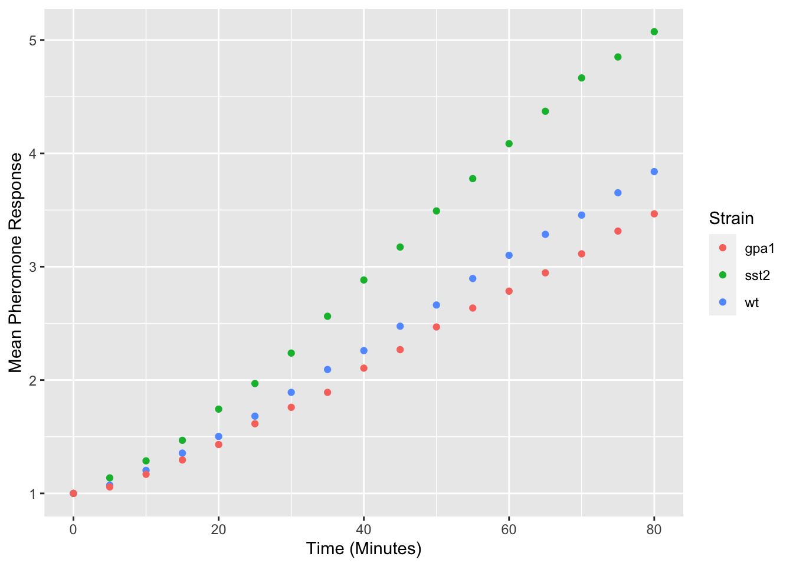
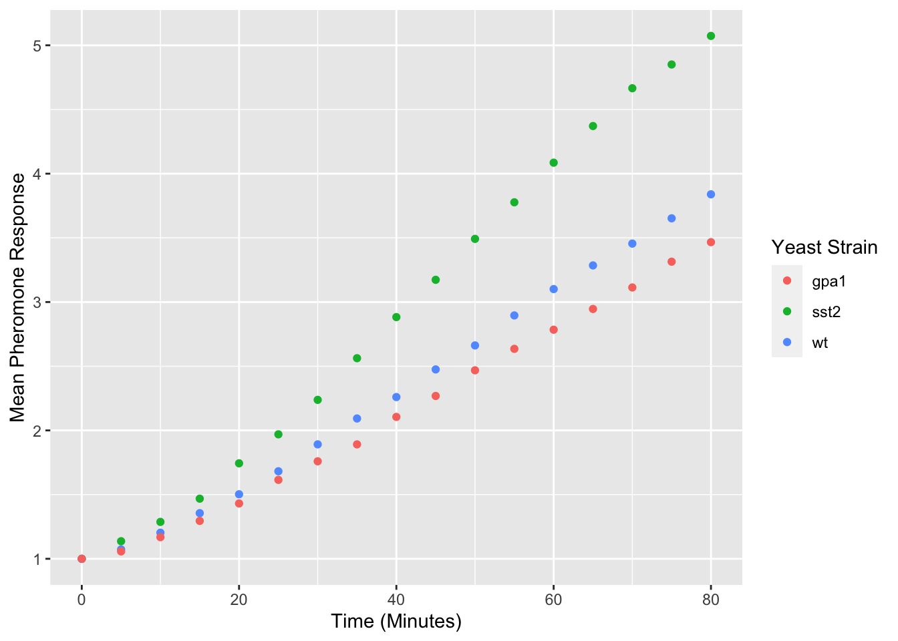
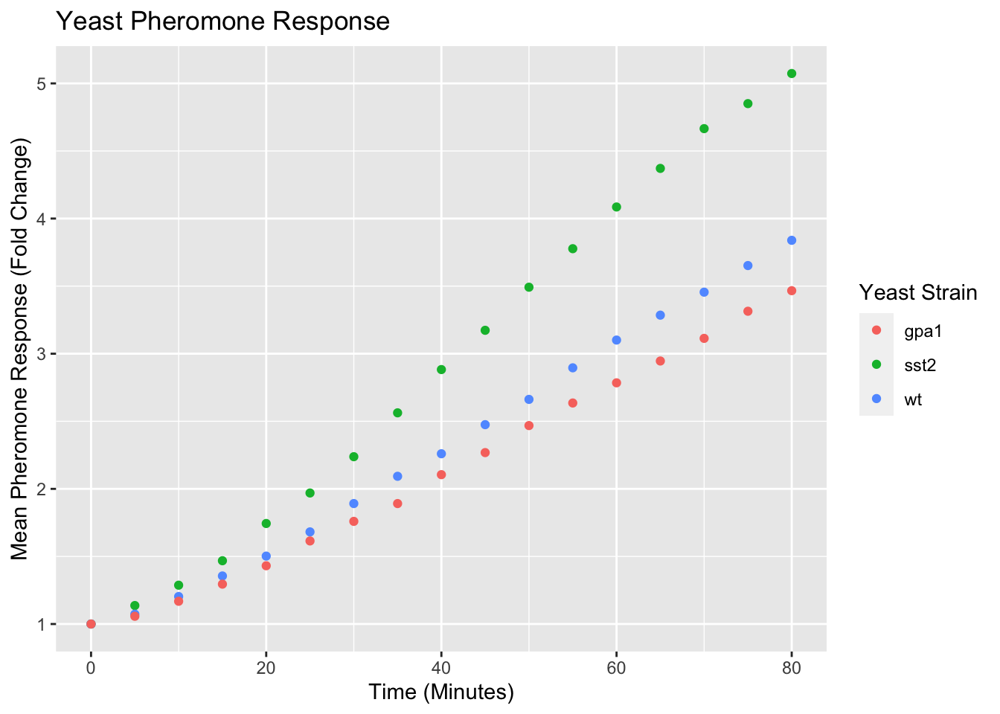
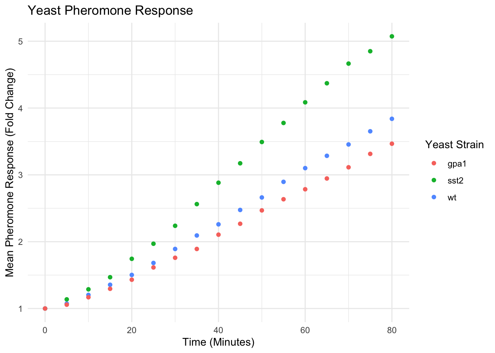

HTLTC-R: Plotting with ggplot2
plotting-ggplot.RmdUsing this document
- Code blocks and R code have a grey background (note, code nested in the text is not highlighted in the pdf version of this document but is a different font).
- # indicates a comment, and anything after a comment will not be evaluated in R
- The comments beginning with ## under the code in the grey code boxes are the output from the code directly above; any comments added by us will start with a single #
- While you can copy and paste code into R, you will learn faster if you type out the commands yourself.
- Read through the document after class. This is meant to be a reference, and ideally, you should be able to understand every line of code. If there is something you do not understand please email us with questions or ask in the following class (you’re probably not the only one with the same question!).
Goals
- Know how to import data from a csv file format
- Understand the basics of the ggplot command
- Be able to make basic plots
Quick data introduction
We will use the data set yeast_long. This data set includes data on the response of budding yeast to mating pheromone over time for following three cell types: wildtype (wt), an sst2 mutant (sst2), and a gpa1 mutant (gpa1). For each mutant there is data on the mean response of a population (avg) as well as the standard deviation of the response (stdev). The data set also includes the time for each data point. The dataset can be loaded into the workspace using data.
data("yeast_long")
Now we can take a look at our data.
class(yeast_long) ## [1] "data.frame" names(yeast_long) ## [1] "Time" "Strain" "Avg" "Stdev" summary(yeast_long) ## Time Strain Avg Stdev ## Min. : 0 gpa1:17 Min. :1.000 Min. :0.0000 ## 1st Qu.:20 sst2:17 1st Qu.:1.485 1st Qu.:0.3246 ## Median :40 wt :17 Median :2.268 Median :0.7201 ## Mean :40 Mean :2.461 Mean :0.7025 ## 3rd Qu.:60 3rd Qu.:3.229 3rd Qu.:1.0456 ## Max. :80 Max. :5.073 Max. :1.5146
Using the class function we can tell that yeast is a data.frame. This means it is a list of vectors each with the same length. Now, let’s look closer at the data itself; we see it looks like a table with 4 columns (each with a header) and 51 rows. We can also look at the structure of this data frame using the summary function. It gives us an idea of the data ranges for each of our variables, as well as a count for the number of data points for each strain.
Basic plotting
Now we have imported some data, so how can we visualize it? R has several different methods for making plots, they are generally refered to as base graphics and ggplot. We will be focusing on the ggplot2 system in these lectures. The gg in ggplot2 stands for the Grammar of Graphics, a system for understanding how graphs are composed and understood, but ggplot2 can still be effectively used without a through understanding of the theoretical underpinings. In this session we will slowly build up a single plot from it’s constituent components.
Nearly all plots made using ggplot2 start with the function ggplot, this function allows you to specify a data frame that you want to use for your plot. You can also specify what you want to appear on each axis using the aes function. In this example, we want:
- Time to appear along the X-axis
- Reading to appear along the Y-axis
yeast_plot = ggplot(yeast_long, aes(x = Time, y = Avg)) yeast_plot

Now as you can see, none of our points have appeared on this plot. This is due to the fact that ggplot is waiting for us to tell it how we want to represent these data points. In this case, we want to represent the points as a scatterplot, so we will use geom_point to display the values.
yeast_plot = ggplot(yeast_long, aes(x = Time, y = Avg)) + geom_point() yeast_plot

This last example also introduces the system ggplot2 uses for building up plots, namely the + sign. Also note that R realizes that the call to geom_point is connected to the call to ggplot. We will use multiple + symbols to build plots often over multiple lines to make it easier to read and understand how the plot is constructed.
You may remember from the data description that we have three types of Yeast Strain represented in this data set (stored in the Strain column), but we haven’t told ggplot2 how we want to differentiate the strains. One method to do this is to assign color to differentiate each stain:
yeast_plot = ggplot(yeast_long, aes(x = Time, y = Avg, color = Strain)) + geom_point() yeast_plot

Notice that the only thing we have changed is adding color = Strain to the ggplot function call, ggplot2 took care of the rest of the color assignment and producing a legend for us. We will look at ways to modify these colors in another lesson.
geom_point is not the only way to represent this data, an alternative would be to use a line graph. This can be accomplished using geom_line:
yeast_plot = ggplot(yeast_long, aes(x = Time, y = Avg, color = Strain)) + geom_line() yeast_plot

Adding/Modifying Labels
By default, ggplot2 uses the column headings as the axis labels, but these column headings often don’t match exactly the desired axis labels. They can be modified using the labs command:
yeast_plot = ggplot(yeast_long, aes(x = Time, y = Avg, color = Strain)) + geom_point() + labs(x = "Time (Minutes)", y = "Mean Pheromone Response") yeast_plot

Modifying the legend title is a bit more complicated as ggplot2 can use multiple different visual properties to build a legend, which in our case is color:
yeast_plot = ggplot(yeast_long, aes(x = Time, y = Avg, color = Strain)) + geom_point() + labs(x = "Time (Minutes)", y = "Mean Pheromone Response", color = "Yeast Strain") yeast_plot

Titles can also be added to plots using the ggtitle function:
yeast_plot = ggplot(yeast_long, aes(x = Time, y = Avg, color = Strain)) + geom_point() + labs(x = "Time (Minutes)", y = "Mean Pheromone Response (Fold Change)", color = "Yeast Strain") + ggtitle("Yeast Pheromone Response") yeast_plot

Modifying Visual Properties of Plots
The default visual styling of the plots can also be modified using a set of built in themes or built to your own preferences. There are several different themes built into ggplot2 and in general they start with “theme_”, here is one example:
yeast_plot = ggplot(yeast_long, aes(x = Time, y = Avg, color = Strain)) + geom_point() + labs(x = "Time (Minutes)", y = "Mean Pheromone Response (Fold Change)", color = "Yeast Strain") + ggtitle("Yeast Pheromone Response") + theme_minimal() yeast_plot

A full list of the built-in themes is available here. There are also an extensive list of plot visuals that can be modified using the theme command. For example, let’s suppose we don’t like the internal grid lines or the gray background:
yeast_plot = ggplot(yeast_long, aes(x = Time, y = Avg, color = Strain)) + geom_point() + labs(x = "Time (Minutes)", y = "Mean Pheromone Response (Fold Change)", color = "Yeast Strain") + ggtitle('Yeast Pheromone Response') + theme(panel.grid = element_blank(), panel.background = element_blank()) yeast_plot

Saving Plots
Plots can be saved to a file on your computer using ggsave. The most common output formats are PNG, PDF and SVG. PNG files are not easy to edit, but can be easily inserted into powerpoint slides. SVG and PDF can edited using other software including Adobe Illustrator. ggsave defaults to saving the last plot made, but can be used to save any plot you have produced. Here’s an example:
yeast_plot = ggplot(yeast_long, aes(x = Time, y = Avg, color = Strain)) + geom_point() + labs(x = "Time (Minutes)", y = "Mean Pheromone Response (Fold Change)", color = "Yeast Strain") + ggtitle("Yeast Pheromone Response") + theme(panel.grid = element_blank(), panel.background = element_blank()) ggsave(file.path(tempdir(), "yeast_growth.png"), yeast_plot) ## Saving 7 x 5 in image
Exercises
The following questions are to be done for homework. They require the use of the mtcars data set, which is built into R and be accessed throught the mtcars variable. Additional information about the data set can be found with ?mtcars
Make a histogram of the mpg (miles per gallon) column. Hint: check the help on geom_histogram
Now make the same histogram but with a bin width of 5 and make it your favorite color.
Make a bar chart of the number of cars in each of the cylinder classes (identified by the cyl column). Also check out the help for geom_bar.
Make a box plot of the number of cylinders vs the car’s total horsepower